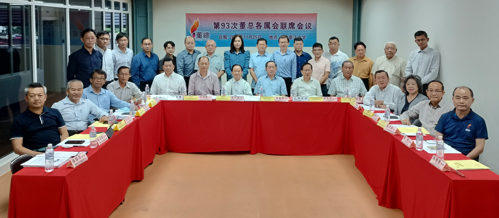

第93次董总各属会联席会议
汇报会务 交流华教应对策略 通过11项提案
第93次董总各属会联席会议合照。
由于受到新冠疫情的影响，董总一年一度的各属会联席会议，自上次2019年在吉兰丹州举办后，已有两年没召开了。筹办此次联席会议的轮值单位为沙巴州华文独立中学董事会联合总会（沙巴独中董总）。在疫情缓和之际，第93次董总各属会联席会议顺利于2022年11月25日在沙巴崇正中学举行。本次会议共获得12个属会25位代表出席，参与的属会包括柔佛、马六甲、森美兰、雪兰莪暨吉隆坡、霹雳、槟城、吉打、玻璃市、彭亨、登嘉楼、砂拉越和沙巴。
此次联席会议主要汇报董总各属会和董总的会务报告，交流各项华教课题上的应对策略，从而凝聚力量，达成共识。该会议也讨论并一致通过和接纳以下11项提案：
一、基于我国宪法及法令已确立各源流教育体系的法定地位，要求政府尽快拟定《多元文化教育政策》的指导性文件，确保教育平等与母语教育权利。
二、基于我国宪法和法令已保障母语教育权利和多源流教育体系，政府有责任制度化公平分配资源和拨款给各源流教育，依社区需求增建各源流学校。
三、促请政府在国会立法成立独立的教育监察委员会，以监督公共权力的运作，贯彻良好施政，加强效率，杜绝滥权和贪污等弊端。
四、要求政府公平、均衡地分配各级学校的经费、师资、网络设备等，以改善城乡教育差距，提供完善和安全的教育环境。
五、促请政府尽速承认华文独中统考证书，作为进入国立大学和公共服务机构的录取资格。同时也促请政府尽速制定申办华文独中的机制，并予以制度化拨款，以满足需求。
六、要求教育部按照我国多元国情，以不纳入课程与评估标准（DSKP）的形式介绍各族书法艺术，包括爪夷字、中文和淡米尔书法等内容。
七、要求政府纠正中小学历史教科书的错误內容，肯定各族群对马来西亚开邦立国的贡献事迹。
八、要求政府制定完善的师资培训制度，一劳永逸解决华小、国民型中学华裔教师与国中华文班师资不足问题。
九、促请政府恢复“国民型中学”的法定地位，履行当年的承诺，改善国民型中学的发展困境。
十、促请政府积极支持非营利的民间团体和教育机构贡献教育事业，其所得盈余一律免税，以及免于缴付人力资源发展基金（HRDF），同时让捐款人或机构享有扣税优惠。
十一、促请政府为各源流学校制定完善的增建和迁建制度，确保它们公平享有国家教育资源，由政府承担各源流学校建校计划，包括迁建微型学校所需的全部经费和校地，务使顺利完成建校。